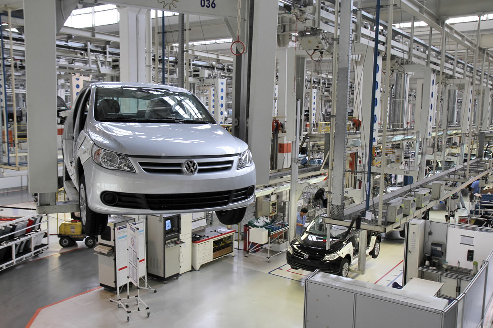
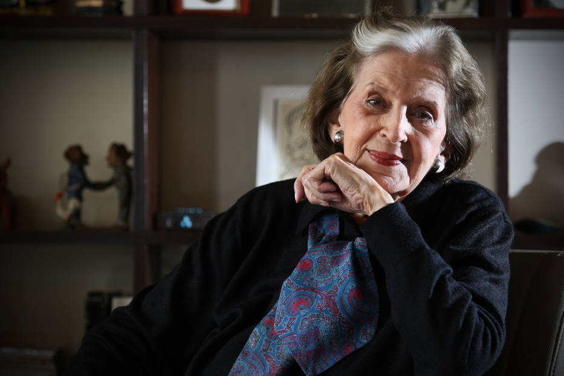
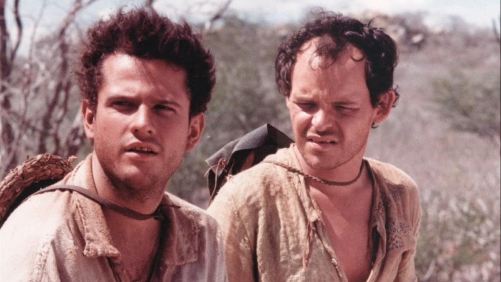

Contexto histórico
O pós-modernismo ou pós-industrial foi consolidado após o período do Modernismo e da Segunda Guerra Mundial, após 1945. Nesse tempo, o mundo inteiro sofria as mudanças boas e ruins que a terceira revolução industrial trouxe aos centros urbanos.
As inovações tecnológicas fizeram com que muitos trabalhadores perdessem seus empregos, fazendo-os tomar consciência da luta de classes e de como o sistema de organização mundial funcionava e o desprezava.
Com a produção em massa, agora o consumismo extremo era característica marcante da sociedade, além da idealização e culto ao corpo exageradamente. Difundiu-se a ideia de que agora vivemos em um mundo “líquido”, onde toda e qualquer relação humana sólida é considerada uma ameaça, e que o apego agora é pelo passageiro, pelo descartável.
Dito isso, a arte pós-modernista, assim como vários outros movimentos, vem para questionar os novos valores da sociedade e pensar sobre o momento atual. O movimento possui fases difundidas e se expande até os dias atuais.

Características do pós-modernismo
Pode-se tomar como principais características do movimento, a espontaneidade, pluralidade, individualismo, carência de regras e valores e oposição ao anterior modernismo, além de a arte agora é produzida para ser consumida de forma rápida.
Com o avanço dos meios de comunicação, a democratização da internet e da informação, tudo agora é difundido, sendo assim, o pós-modernismo mistura estilos, não tendo mais uma forma padronizada de arte. Podemos citar como exemplo a mentalidade atual de que podemos gostar de vários estilos musicais e de tantas outras coisas ao mesmo tempo.
Simultaneamente a tudo isso, a filosofia também avança e traz temas como o vazio existencial e reflete sobre as incertezas da vida. Podemos resumir as características como:
• Ausência de regras e valores
• Pluralidade e diversidade
• Individualismo
• Combinações de tendências e estilos
• Produção em série de cultura voltada para o consumo rápido
• Liberdade de expressão e pensamento
• Mistura entre realidade e imaginação
• Bombardeios de grande quantidade de informações
• Incertezas e vazios existenciais
Autores e obras
Lygia Fagundes Telles
Lygia Fagundes Telles nasceu em abril de 1923, em São Paulo. Publicou seu primeiro livro em 1938, e, formada em Direito, trabalhou como procuradora do Instituto de Previdência do Estado de São Paulo. Posteriormente, como membro da Academia Brasileira de Letras, ganhou prêmios como o Jabuti e Camões.

O Auto da Compadecida
Peça teatral de Ariano Suassuna, uma das obras mais famosas do período pós-modernista, que posteriormente se tornou minissérie e filme. A obra se passa na região nordestina do país e estreia com 2 protagonistas, João Grilo e Chicó.
